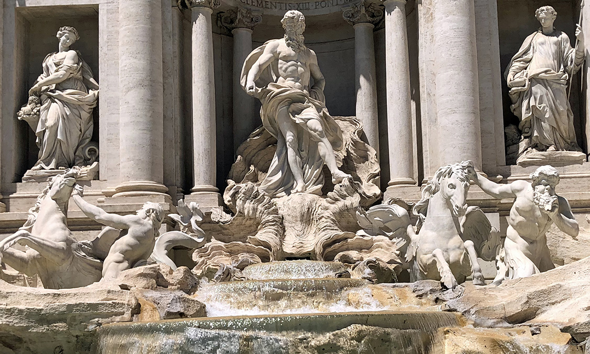

Places to visit in ITALY


Colosseum, Rome
This huge amphitheater, the largest of its kind ever built by the Roman Empire and the largest of their constructions to survive, remained a model for sports facilities right up to modern times. Built by Vespasian in 72 CE and enlarged by the addition of a fourth story by his son, Titus, the Colosseum was a venue for public spectacles and shows - even mock sea battles.

Grand Canal, Venice
The Grand Canal is the largest and most famous of these waterways, cutting a wide S-shaped route through the city. Along its sides are the grandest of the palaces once owned by the wealthiest and most powerful families of the Venetian Republic. The best way to see many of the grand palaces, whose fronts face the water, is from a Vaporetto ride along the Grand Canal.
